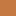
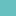

<!doctype html>
<html lang="en">
    <head>
        <meta charset="utf-8">
        <meta http-equiv="X-UA-Compatible" content="IE=edge">
        <meta name="viewport" content="initial-scale=1,user-scalable=no,maximum-scale=1,width=device-width">
        <meta name="mobile-web-app-capable" content="yes">
        <meta name="apple-mobile-web-app-capable" content="yes">
        <link rel="stylesheet" href="css/leaflet.css">
        <link rel="stylesheet" href="css/qgis2web.css"><link rel="stylesheet" href="css/fontawesome-all.min.css">
        <style>
        html, body, #map {
            width: 100%;
            height: 100%;
            padding: 0;
            margin: 0;
        }
        </style>
        <title></title>
    </head>
    <body>
        <div id="map">
        </div>
        <script src="js/qgis2web_expressions.js"></script>
        <script src="js/leaflet.js"></script>
        <script src="js/leaflet.rotatedMarker.js"></script>
        <script src="js/leaflet.pattern.js"></script>
        <script src="js/leaflet-hash.js"></script>
        <script src="js/Autolinker.min.js"></script>
        <script src="js/rbush.min.js"></script>
        <script src="js/labelgun.min.js"></script>
        <script src="js/labels.js"></script>
        <script src="data/Ice_1.js"></script>
        <script src="data/GlaciomarineDeposits_2.js"></script>
        <script src="data/Moraines_3.js"></script>
        <script src="data/Drumlins_4.js"></script>
        <script src="data/IceStreams_5.js"></script>
        <script>
        var map = L.map('map', {
            zoomControl:true, maxZoom:28, minZoom:3
        }).fitBounds([[27.62930830990411,-132.4953829338362],[93.85920380276434,-50.493066208301286]]);
        var hash = new L.Hash(map);
        map.attributionControl.setPrefix('<a href="https://github.com/tomchadwin/qgis2web" target="_blank">qgis2web</a> &middot; <a href="https://leafletjs.com" title="A JS library for interactive maps">Leaflet</a> &middot; <a href="https://qgis.org">QGIS</a>');
        var bounds_group = new L.featureGroup([]);
        function setBounds() {
        }
        var layer_ESRIWorldImagery_0 = L.tileLayer('https://server.arcgisonline.com/ArcGIS/rest/services/World_Imagery/MapServer/tile/{z}/{y}/{x}', {
            opacity: 1.0,
            attribution: 'Tiles &copy; Esri &mdash; Source: Esri, i-cubed, USDA, USGS, AEX, GeoEye, Getmapping, Aerogrid, IGN, IGP, UPR-EGP, and the GIS User Community',
            minZoom: 3,
            maxZoom: 28,
            minNativeZoom: 0,
            maxNativeZoom: 18
        });
        layer_ESRIWorldImagery_0;
        map.addLayer(layer_ESRIWorldImagery_0);
        function pop_Ice_1(feature, layer) {
            var popupContent = '<table>\
                    <tr>\
                        <td colspan="2">' + (feature.properties['Name'] !== null ? Autolinker.link(feature.properties['Name'].toLocaleString(), {truncate: {length: 30, location: 'smart'}}) : '') + '</td>\
                    </tr>\
                </table>';
            layer.bindPopup(popupContent, {maxHeight: 400});
        }

        function style_Ice_1_0() {
            return {
                pane: 'pane_Ice_1',
                opacity: 1,
                color: 'rgba(255,255,255,1.0)',
                dashArray: '',
                lineCap: 'butt',
                lineJoin: 'miter',
                weight: 2.0, 
                fill: true,
                fillOpacity: 1,
                fillColor: 'rgba(230,249,249,0.3)',
                interactive: false,
            }
        }
        map.createPane('pane_Ice_1');
        map.getPane('pane_Ice_1').style.zIndex = 401;
        map.getPane('pane_Ice_1').style['mix-blend-mode'] = 'normal';
        var layer_Ice_1 = new L.geoJson(json_Ice_1, {
            attribution: '',
            interactive: false,
            dataVar: 'json_Ice_1',
            layerName: 'layer_Ice_1',
            pane: 'pane_Ice_1',
            onEachFeature: pop_Ice_1,
            style: style_Ice_1_0,
        });
        bounds_group.addLayer(layer_Ice_1);
        map.addLayer(layer_Ice_1);
        function pop_GlaciomarineDeposits_2(feature, layer) {
            var popupContent = '<table>\
                    <tr>\
                        <td colspan="2">' + (feature.properties['Name'] !== null ? Autolinker.link(feature.properties['Name'].toLocaleString(), {truncate: {length: 30, location: 'smart'}}) : '') + '</td>\
                    </tr>\
                </table>';
            layer.bindPopup(popupContent, {maxHeight: 400});
        }

        function style_GlaciomarineDeposits_2_0() {
            return {
                pane: 'pane_GlaciomarineDeposits_2',
                stroke: false, 
                fill: true,
                fillOpacity: 1,
                fillColor: 'rgba(103,192,192,1.0)',
                interactive: true,
            }
        }
        map.createPane('pane_GlaciomarineDeposits_2');
        map.getPane('pane_GlaciomarineDeposits_2').style.zIndex = 402;
        map.getPane('pane_GlaciomarineDeposits_2').style['mix-blend-mode'] = 'normal';
        var layer_GlaciomarineDeposits_2 = new L.geoJson(json_GlaciomarineDeposits_2, {
            attribution: '',
            interactive: true,
            dataVar: 'json_GlaciomarineDeposits_2',
            layerName: 'layer_GlaciomarineDeposits_2',
            pane: 'pane_GlaciomarineDeposits_2',
            onEachFeature: pop_GlaciomarineDeposits_2,
            style: style_GlaciomarineDeposits_2_0,
        });
        bounds_group.addLayer(layer_GlaciomarineDeposits_2);
        map.addLayer(layer_GlaciomarineDeposits_2);
        function pop_Moraines_3(feature, layer) {
            var popupContent = '<table>\
                    <tr>\
                        <td colspan="2">' + (feature.properties['Name'] !== null ? Autolinker.link(feature.properties['Name'].toLocaleString(), {truncate: {length: 30, location: 'smart'}}) : '') + '</td>\
                    </tr>\
                </table>';
            layer.bindPopup(popupContent, {maxHeight: 400});
        }

        function style_Moraines_3_0() {
            return {
                pane: 'pane_Moraines_3',
                stroke: false, 
                fill: true,
                fillOpacity: 1,
                fillColor: 'rgba(197,121,66,1.0)',
                interactive: true,
            }
        }
        map.createPane('pane_Moraines_3');
        map.getPane('pane_Moraines_3').style.zIndex = 403;
        map.getPane('pane_Moraines_3').style['mix-blend-mode'] = 'normal';
        var layer_Moraines_3 = new L.geoJson(json_Moraines_3, {
            attribution: '',
            interactive: true,
            dataVar: 'json_Moraines_3',
            layerName: 'layer_Moraines_3',
            pane: 'pane_Moraines_3',
            onEachFeature: pop_Moraines_3,
            style: style_Moraines_3_0,
        });
        bounds_group.addLayer(layer_Moraines_3);
        map.addLayer(layer_Moraines_3);
        function pop_Drumlins_4(feature, layer) {
            var popupContent = '<table>\
                    <tr>\
                        <td colspan="2">' + (feature.properties['Name'] !== null ? Autolinker.link(feature.properties['Name'].toLocaleString(), {truncate: {length: 30, location: 'smart'}}) : '') + '</td>\
                    </tr>\
                </table>';
            layer.bindPopup(popupContent, {maxHeight: 400});
        }

        function style_Drumlins_4_0() {
            return {
                pane: 'pane_Drumlins_4',
                opacity: 1,
                color: 'rgba(239,201,32,1.0)',
                dashArray: '',
                lineCap: 'square',
                lineJoin: 'bevel',
                weight: 1.0,
                fillOpacity: 0,
                interactive: true,
            }
        }
        map.createPane('pane_Drumlins_4');
        map.getPane('pane_Drumlins_4').style.zIndex = 404;
        map.getPane('pane_Drumlins_4').style['mix-blend-mode'] = 'normal';
        var layer_Drumlins_4 = new L.geoJson(json_Drumlins_4, {
            attribution: '',
            interactive: true,
            dataVar: 'json_Drumlins_4',
            layerName: 'layer_Drumlins_4',
            pane: 'pane_Drumlins_4',
            onEachFeature: pop_Drumlins_4,
            style: style_Drumlins_4_0,
        });
        bounds_group.addLayer(layer_Drumlins_4);
        map.addLayer(layer_Drumlins_4);
        function pop_IceStreams_5(feature, layer) {
            var popupContent = '<table>\
                    <tr>\
                        <td colspan="2">' + (feature.properties['Name'] !== null ? Autolinker.link(feature.properties['Name'].toLocaleString(), {truncate: {length: 30, location: 'smart'}}) : '') + '</td>\
                    </tr>\
                </table>';
            layer.bindPopup(popupContent, {maxHeight: 400});
        }

        function style_IceStreams_5_0() {
            return {
                pane: 'pane_IceStreams_5',
                opacity: 1,
                color: 'rgba(23,50,255,1.0)',
                dashArray: '',
                lineCap: 'square',
                lineJoin: 'bevel',
                weight: 1.0,
                fillOpacity: 0,
                interactive: true,
            }
        }
        map.createPane('pane_IceStreams_5');
        map.getPane('pane_IceStreams_5').style.zIndex = 405;
        map.getPane('pane_IceStreams_5').style['mix-blend-mode'] = 'normal';
        var layer_IceStreams_5 = new L.geoJson(json_IceStreams_5, {
            attribution: '',
            interactive: true,
            dataVar: 'json_IceStreams_5',
            layerName: 'layer_IceStreams_5',
            pane: 'pane_IceStreams_5',
            onEachFeature: pop_IceStreams_5,
            style: style_IceStreams_5_0,
        });
        bounds_group.addLayer(layer_IceStreams_5);
        map.addLayer(layer_IceStreams_5);
        var baseMaps = {};
        L.control.layers(baseMaps,{' Ice Streams': layer_IceStreams_5,' Drumlins': layer_Drumlins_4,' Moraines': layer_Moraines_3,' Glaciomarine Deposits': layer_GlaciomarineDeposits_2,' Ice': layer_Ice_1,"ESRI World Imagery": layer_ESRIWorldImagery_0,},{collapsed:false}).addTo(map);
        setBounds();
        </script>
    </body>
</html>
